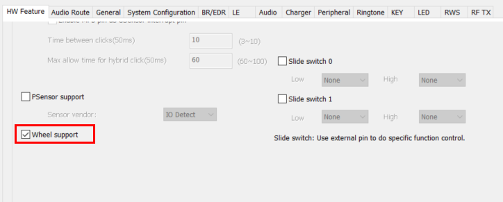
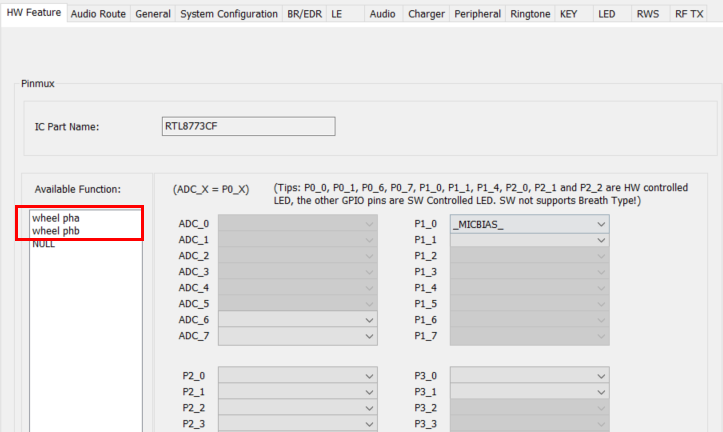

APP QDEC Module Application Note
V1.1
2023/05/26
Revision History
| Version | Date | Description |
| V1.0.0 | 2021/12/01 | Stable Release |
| V1.1 | 2023/05/26 | Optimize content |
Contents
Table List
Figure List
Glossary
| Terms | Definitions |
| QDEC | Quadrature Decoder |
1 Introduction
QDEC is used to detect the motion state of the rotation sensing device. For more details about operation principle of QDEC, please refer to 18 QDEC in IO User Manual .This document provides overview of APP QDEC module. The following topics are included:
- Configuration in McuConfigTool
- Source code review
Macro F_APP_QDECODE_SUPPORT should be defined when APP QDEC module is used.
2 McuConfigTool Configuration
QDEC can be enabled in "HW Feature" page as shown in following figure.

Figure 2-1 QDEC enable
QDEC pin can be set in following figure.

Figure 2-2 QDEC pinmux configuration
3 Source Code Overview
This chapter provide overview of app QDEC source code. The following topics will be included:
- QDEC initialization
- QDEC interrupt process
- Process when enter and exit low power mode
3.1 QDEC Initialization
The components of QDEC initialization are as follows:
- Pad and pinmux initialization
- Driver initialization
- Register callback function
void app_qdec_pad_config(void)
{
}
Read QDEC initial level status before pinmux initialization and driver initialization.
void app_qdec_init_status_read(void)
{
...
}
Pinmux initialization and driver initialization.
static void app_qdec_pinmux_config(void)
{
}
void app_qdec_driver_init(void)
{
qdecInitStruct.
initPhaseY = (qdecoder_a_status << 1) | qdecoder_b_status;
app_qdec_ctx_clear();
}
Register callback function.
void app_qdec_init(void)
{
}
3.2 QDEC Interrupt Process
In QDEC interrupt handler, the following action will be done:
- Mask counter interrupt
- Read direction and count
- Send message to APP task
{
{
qdec_msg.
u.
param = (qdec_ctx.dir << 16) | 1;
APP_PRINT_INFO3(
"QDEC_Handler: pre_ct %d , cur_ct %d wakeup_2phase %d", qdec_ctx.pre_ct,
qdec_ctx.cur_ct, wakeup_2phase);
if (qdec_ctx.pre_ct == 0)
{
if (wakeup_2phase == false)
{
qdec_ctx.pre_ct = qdec_ctx.cur_ct;
}
}
else if ((qdec_ctx.cur_ct - qdec_ctx.pre_ct >= 2) || (qdec_ctx.cur_ct - qdec_ctx.pre_ct <= -2))
{
qdec_ctx.pre_ct = qdec_ctx.cur_ct;
}
}
wakeup_2phase = false;
}
When QDEC msg received, do action accroding to QDEC rotation direction. Volume up/down MMI is called in the following sample code.
void app_qdec_msg_handler(
T_IO_MSG *io_driver_msg_recv)
{
uint16_t direction = io_driver_msg_recv->
u.
param >> 16;
uint16_t delta = (uint16_t)(io_driver_msg_recv->
u.
param & 0xFFFF);
bool vol_is_up = false;
APP_PRINT_INFO2(
"app_qdec_msg_handler: delta 0x%x , direction %d", delta, direction);
vol_is_up = (direction != 0) ? true : false;
if (delta == QDEC_WAKEUP_MAGIC_NUM)
{
}
else
{
if (vol_is_up)
{
}
else
{
}
}
app_qdec_timer_id, 0, 0, false,
QDEC_BLOCK_DLPS_TIMER_MS);
}
3.3 QDEC Low Power Mode
This chapter will explain how to enter and exit low power mode. The following content is included:
- What will be done before entering low power mode
- What will be done after exiting low power mode
- What will be done before entering power down mode
Before entering low power mode, do pad configuration and enable pad wakeup interrupt.
void app_qdec_pad_enter_dlps_config(void)
{
app_qdec_init_status_read();
pre_a_status = qdecoder_a_status;
pre_b_status = qdecoder_b_status;
if (qdecoder_a_status)
{
}
else
{
}
if (qdecoder_b_status)
{
}
else
{
}
}
Enter QDEC wakeup handle when system wakeup form low power mode by QDEC pin. Send message to APP task in this handler. If level of two pins all changed, valid direction and delta parametrs will be included in the message.
void app_qdec_wakeup_handle(void)
{
app_qdec_init_status_read();
if (pre_a_status != qdecoder_a_status ||
pre_b_status != qdecoder_b_status)
{
if (pre_a_status != qdecoder_a_status &&
pre_b_status != qdecoder_b_status)
{
wakeup_2phase = true;
qdec_msg.
u.
param = (qdec_ctx.dir << 16) | 1;
}
else
{
qdec_msg.
u.
param = QDEC_WAKEUP_MAGIC_NUM;
}
}
}
When exiting low power mode , driver initialization will be done.
void app_qdec_pad_exit_dlps_config(void)
{
app_qdec_init_status_read();
app_qdec_driver_init();
}
Considering power consumption, pad will be pulled down before entering power down mode.
void app_qdec_enter_power_down_cfg(void)
{
}